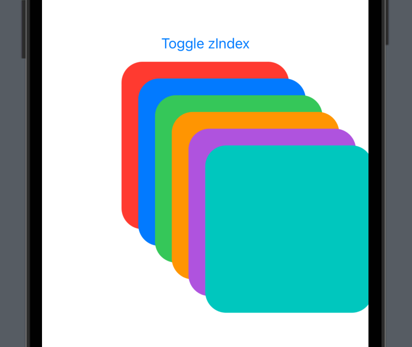
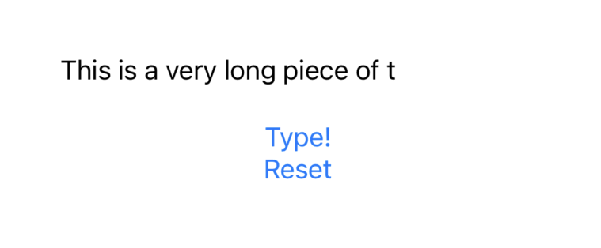
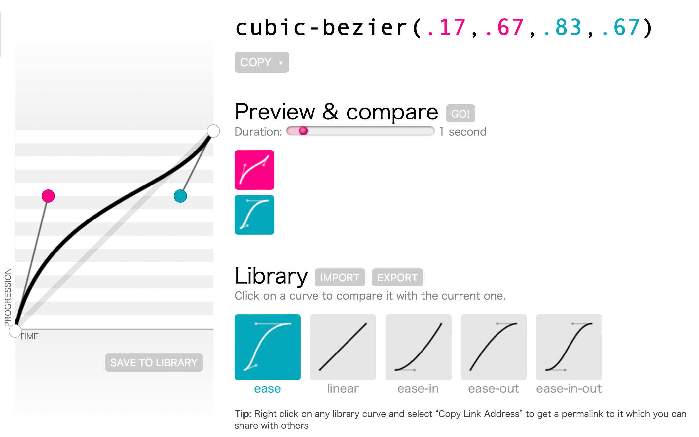
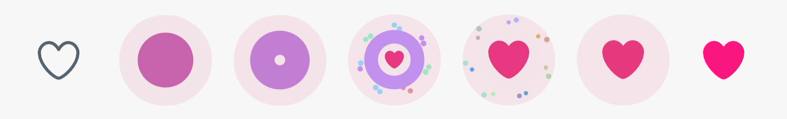
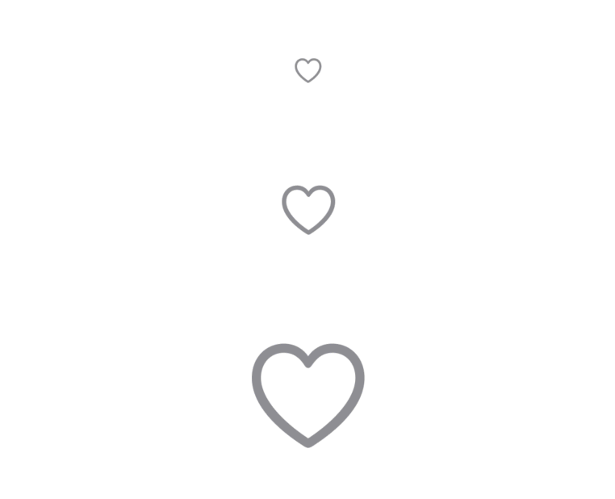
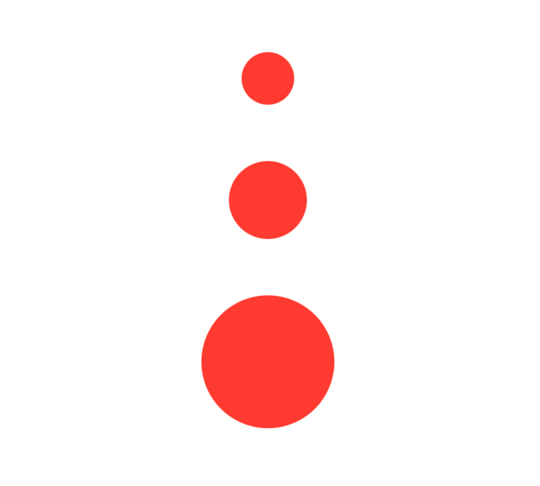
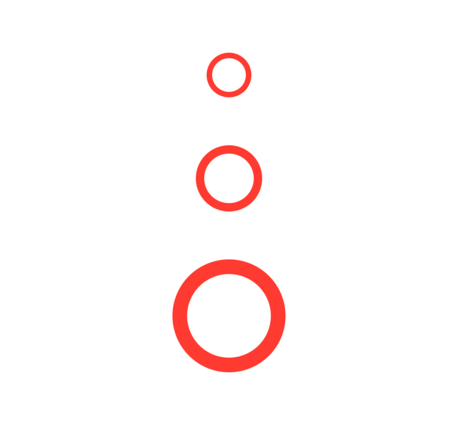
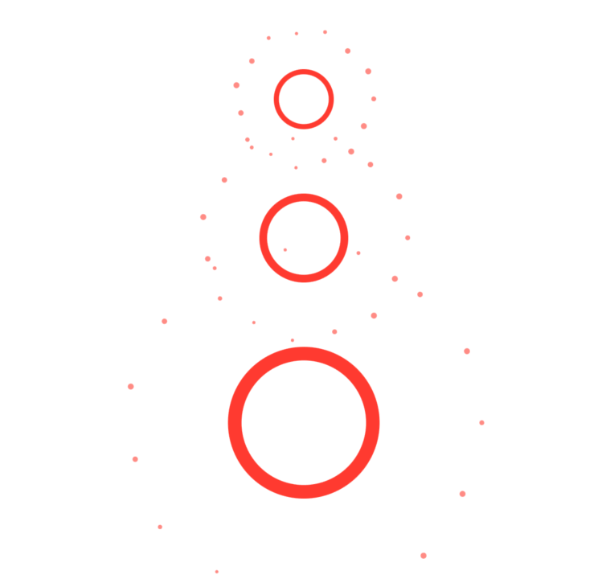
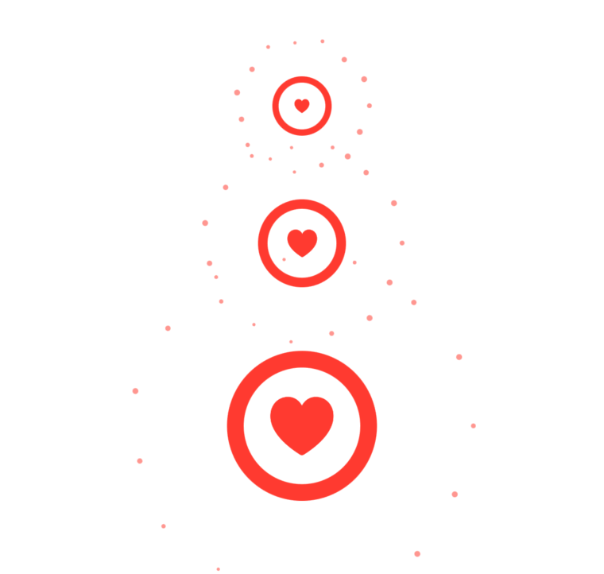
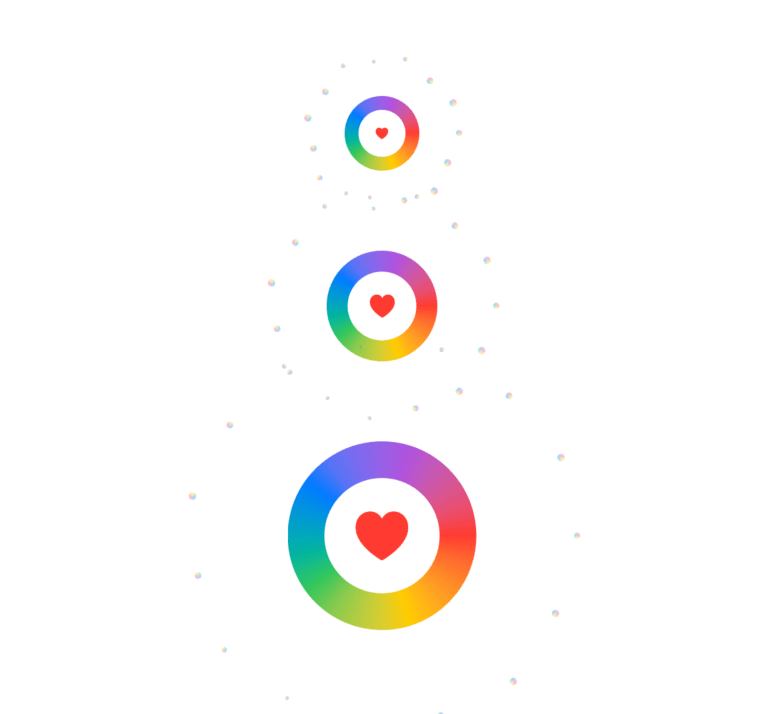

Almost everything can be animated in SwiftUI, although you’ll find there are quite a few things that take a little… encouragement, shall we say?
First the easy stuff. We can trigger an explicit animation using withAnimation():
struct ContentView: View {
@State private var scale = 1.0
var body: some View {
Text("Hello, World!")
.scaleEffect(scale)
.onTapGesture {
withAnimation {
scale += 1
}
}
}
}And we can use implicit animations instead:
struct ContentView: View {
@State private var scale = 1.0
var body: some View {
Text("Hello, World!")
.scaleEffect(scale)
.onTapGesture {
scale += 1
}
.animation(.default, value: scale)
}
}Tip: Do not use implicit animations without providing the value parameter – that’s deprecated from iOS 15 and later because it would animate every change, including device rotation.
But not everything works this way. For example, if we had several overlapping views, we might want to animate the Z index of one view:
struct ContentView: View {
@State private var redAtFront = false
let colors: [Color] = [.blue, .green, .orange, .purple, .mint]
var body: some View {
VStack {
Button("Toggle zIndex") {
withAnimation(.linear(duration: 1)) {
redAtFront.toggle()
}
}
ZStack {
RoundedRectangle(cornerRadius: 25)
.fill(.red)
.zIndex(redAtFront ? 6 : 0)
ForEach(0..<5) { i in
RoundedRectangle(cornerRadius: 25)
.fill(colors[i])
.offset(x: Double(i + 1) * 20, y: Double(i + 1) * 20)
.zIndex(Double(i))
}
}
.frame(width: 200, height: 200)
}
}
}That code is correct, but won’t work: the red box will jump to the front, despite the animation request. This is because Z index can’t be animated with SwiftUI – or at least not by default.

We can make our Z index code animate with a surprisingly small change, and the technique involved can be applied in numerous other places to animate practically anything.
The key is to create a new ViewModifier that conforms to the Animatable protocol, which has the job of handling whatever you need in your your animation. So, we might write this:
struct AnimatableZIndexModifier: ViewModifier, Animatable {
var index: Double
func body(content: Content) -> some View {
content
.zIndex(index)
}
}Tip: The name of the view modifier is “animatable” not “animated” – we’re providing the ability for this change to be animated, but whether or not it actually is animated depends on how it’s used.
While it’s possible to apply modifier structs directly to a view, it’s usually a better idea to wrap them in a View extension to make our code easier:
extension View {
func animatableZIndex(_ index: Double) -> some View {
self.modifier(AnimatableZIndexModifier(index: index))
}
}And now rather than using zIndex() on the view we want to change, we use animatedZIndex() instead:
RoundedRectangle(cornerRadius: 25)
.fill(.red)
.animatableZIndex(redAtFront ? 6 : 0)However, that still won’t work – no animation will take place.
You see, all the Animatable protocol really does is give us the ability to read and write some kind of interpolated value over time. As we’re animating between the values 0 and 6, Animatable will send us values like 0.1, 1.35, 4.825, and so on, as it moves smoothly from 0 through to 6 based on whatever timing curve the animation is using. That’s all it does: it sends in the interpolated value, and it’s down to us to decide what should happen to it.
In this case, those interpolated values are exactly what we want for our Z index, so that our view moves smoothly from Z index 0 through to 6. So, when the Animatable protocol attempts to provide some animating data for us, we just need to assign that to our index property – add this property to AnimatableZIndexModifier now:
var animatableData: Double {
get { index }
set { index = newValue }
}That’s it! If you run the code again you’ll see our animation works great.
Tip: You can just create a regular stored property called animatableData to get the same result, but it might result in quite clumsy code.
If you’re curious, try adding a print() statement into the setter we just made so you can see exactly what the Animatable protocol is doing:
var animatableData: Double {
get { index }
set { print(newValue); index = newValue }
}When that runs you’ll now see all the interpolated values being passed in – it’s another feature of SwiftUI that looks like magic, but is actually surprisingly simple internally.
Having this kind of control is particularly important if you need to support iOS versions below 16, because a number of things could not be animated in iOS 15.6 and below. For example, animating the system font to a new size works out of the box in iOS 16 and later, but if you need backwards compatibility it means relying on Animatable like this:
struct AnimatableFontModifier: ViewModifier, Animatable {
var size: Double
var animatableData: Double {
get { size }
set { size = newValue }
}
func body(content: Content) -> some View {
content
.font(.system(size: size))
}
}Again, it’s a good idea to create a View extension to make it easier to use:
extension View {
func animatableFont(size: Double) -> some View {
self.modifier(AnimatableFontModifier(size: size))
}
}And now you can create a view to use it:
struct ContentView: View {
@State private var scaleUp = false
var body: some View {
Text("Hello, World!")
.animatableFont(size: scaleUp ? 56 : 24)
.onTapGesture {
withAnimation(.spring(response: 0.5, dampingFraction: 0.5)) {
scaleUp.toggle()
}
}
}
}The result looks fantastic, but keep in mind that using it means SwiftUI has to create the system font at every size increment passed in by Animatable – it’s a great effect, but it’s easily overused. I’m hoping that Apple’s own solution from iOS 16 and later is somehow more optimized!
If you need to target iOS 15.6 and below (or similar versions of macOS, tvOS, and watchOS), there is one particular thing that isn’t animatable by default even though it seems like it ought to be, and that’s the foregroundColor() modifier.
This kind of code won’t work at all:
struct ContentView: View {
@State private var isRed = false
var body: some View {
Text("Hello, World!")
.foregroundColor(isRed ? .red : .blue)
.font(.largeTitle.bold())
.onTapGesture {
withAnimation {
isRed.toggle()
}
}
}
}We could go down a complex route of making it animatable, but there is no neat solution with this approach – you’d need to store both the before and after colors right inside the view you want to work with, then use the values from the Animatable protocol to manually interpolate between the RGBA values of those two colors.
Fortunately, we can cheat a little, because the colorMultiply() method is animatable. This multiplies the original color of a view with some other color, meaning that the red value of the original is multiplied by the red value of our other color, then the green, then the blue, and then the alpha. If we use white as our original color, then multiplying by any other color will return that same color because we’re multiplying each of its components by 1.
So, if we give the text a white color we can multiply over it using the colors we’re trying to animate between, like this:
Text("Hello, World!")
.foregroundColor(.white)
.colorMultiply(isRed ? .red : .blue)And that will work, without having to go into the mess of trying to make something custom. If you wanted, you could still wrap up this behavior in a neat modifier, like this:
extension View {
func animatableForegroundColor(_ color: Color) -> some View {
self
.foregroundColor(.white)
.colorMultiply(color)
}
}Fortunately for all of us, foregroundColor() is animatable in iOS 16.0 and later.
I said it earlier, but it bears repeating: all the Animatable protocol really does is give us the ability to read and write some kind of interpolated value over time. This means it isn’t restricted to ViewModifier, and actually works perfectly fine with a plain old View too.
As an example, we could make a view that knows how to animate a number between various values – we’d start off by making something that knows how to draw some text with a specific fraction length, like this:
struct CountingText: View, Animatable {
var value: Double
var fractionLength = 8
var body: some View {
Text(value.formatted(.number.precision(.fractionLength(fractionLength))))
}
}That’s barely doing anything, but thanks to SwiftUI the next step is trivial – how do you think we upgrade that so it supports animation?
Simple: we just add an animatableData property to get and set value, like this:
var animatableData: Double {
get { value }
set { value = newValue }
}Now we can go ahead and use it just like any other view:
struct ContentView: View {
@State private var value = 0.0
var body: some View {
CountingText(value: value)
.onTapGesture {
withAnimation(.linear) {
value = Double.random(in: 1...1000)
}
}
}
}The point is that Animatable sends in whatever value should be used and it’s up to us what we do with it – we might display it immediately, we might apply it to a bunch of other modifiers, or perhaps we stash the values away for use later on.
I’d like you to try it yourself: try creating a TypewriterText view that accepts a string to display, and is able to type it out using an animation.
Have a go and see how you get on! I’ll add my solution below.
The simplest solution looks like this:
struct TypewriterText: View, Animatable {
var string: String
var count = 0
var animatableData: Double {
get { Double(count) }
set { count = Int(max(0, newValue)) }
}
var body: some View {
let stringToShow = String(string.prefix(count))
Text(stringToShow)
}
}We could then use it something like this:
struct ContentView: View {
@State private var value = 0
let message = "This is a very long piece of text that appears letter by letter."
var body: some View {
VStack {
TypewriterText(string: message, count: value)
.frame(width: 300, alignment: .leading)
Button("Type!") {
withAnimation(.linear(duration: 2)) {
value = message.count
}
}
Button("Reset") {
value = 0
}
}
}
}That works well, but we could improve the effect a little more by adding a hidden copy of our text inside a ZStack, so that SwiftUI preallocates the right amount of space for the text:
ZStack {
Text(string)
.hidden()
.overlay(
Text(stringToShow),
alignment: .topLeading
)
}
But we can do better! Having this typewriting effect is nice for lots of folks, but what about folks who rely on VoiceOver, or folks who have specifically asked apps to reduce the amount of animation they use? If we factor in both those we can make this view even better.
First, add two properties to the view:
@Environment(\.accessibilityVoiceOverEnabled) var accessibilityVoiceOverEnabled
@Environment(\.accessibilityReduceMotion) var accessibilityReduceMotionAnd now we can modify the body property to return two different things depending on whether we want the animation or not:
if accessibilityVoiceOverEnabled || accessibilityReduceMotion {
Text(string)
} else {
let stringToShow = String(string.prefix(count))
ZStack {
Text(string)
.hidden()
.overlay(
Text(stringToShow),
alignment: .topLeading
)
}
}With that in place we have a great solution that works for everyone.
SwiftUI gives us fine-grained control over how our animation movements take place: rather than relying on linear movements or ease-in-out, for example, we can instead create completely custom cubic Bézier paths that match whatever acceleration and deceleration we want.
For example, we could create a timing curve that very slowly around the center of an animation, but bounces hard on the edges:
extension Animation {
static var edgeBounce: Animation {
Animation.timingCurve(0, 1, 1, 0)
}
static func edgeBounce(duration: TimeInterval = 0.2) -> Animation {
Animation.timingCurve(0, 1, 1, 0, duration: duration)
}
}Notice how I’ve added two variations of the same curve: one as a property, and one as a method that accepts a duration. This matches the same way Apple’s own timing curves are created – e.g. .easeIn and .easeIn(duration:) – so it makes it more natural to use our custom curves.
With that extension in place, we can now create animations using our custom timing curve just like we would use one of the built-in curves:
struct ContentView: View {
@State private var offset = -200.0
var body: some View {
Text("Hello, world!")
.offset(y: offset)
.animation(.edgeBounce(duration: 2).repeatForever(autoreverses: true), value: offset)
.onTapGesture {
offset = 200
}
}
}A particularly common animation curve is called “ease in out back”, which is like a double spring animation where the change goes in the wrong direction first, then moves forward normally, then overshoots the destination, then move back to the finished value. You’ll often see this in Apple’s own designs, such as the App Store: when you tap on one of their featured stories in the Today tab, the image shrinks a little, then scales up to fill the screen.
We can implement this ourselves:
extension Animation {
static var easeInOutBack: Animation {
Animation.timingCurve(0.5, -0.5, 0.5, 1.5)
}
static func easeInOutBack(duration: TimeInterval = 0.2) -> Animation {
Animation.timingCurve(0.5, -0.5, 0.5, 1.5, duration: duration)
}
}Or create a stronger effect by increasing the steepness of the curve:
static var easeInOutBackSteep: Animation {
Animation.timingCurve(0.7, -0.5, 0.3, 1.5)
}
static func easeInOutBackSteep(duration: TimeInterval = 0.2) -> Animation {
Animation.timingCurve(0.7, -0.5, 0.3, 1.5, duration: duration)
}Rather than try to guess the various X/Y values for your Bézier curves, a much better idea is to use a website such as https://cubic-bezier.com that lets you drag handles around visually to control exactly how the movement should work.
Once you’re done, that site lets you preview the movement compared to other common curves, and provides the current parameters to input into your timing curve code – it really is the easiest way to get the exact effect you want, and gives you lots of chance to experiment to create some unique animation effects.

Animations can be triggered in all sorts of ways and places in SwiftUI, but we have API available to us that helps control the way animations happen – we can inject custom functionality into the process to get whatever specific result we’re aiming for.
Previously I showed you how we can make an Animatable view selectively disable its animations by watching the environment, but it’s not always possible to write code to bypass the animation in that way. In fact, a lot of the time you shouldn’t even be calling withAnimation() unless you actually want animation to happen.
So, rather than having view modifiers try to override an animation request, we could write a small global function to give us more control over the process, like this:
func withMotionAnimation<Result>(_ animation: Animation? = .default, _ body: () throws -> Result) rethrows -> Result {
if UIAccessibility.isReduceMotionEnabled {
return try body()
} else {
return try withAnimation(animation, body)
}
}As that’s a free function, we don’t have access to the SwiftUI environment to query the current setting for reducing motion, but UIAccessibility.isReduceMotionEnabled works just fine. Using this approach allows us to make our intent clear: when we say withAnimation() we mean this is a non-movement animation such as an opacity change, whereas when we use withMotionAnimation() we mean this involves movement and therefore might need to be skipped based on the user’s settings.
Use it like this:
struct ContentView: View {
@State var scale = 1.0
var body: some View {
Button("Tap Me") {
withMotionAnimation {
scale += 1
}
}
.scaleEffect(scale)
}
}That solves the problem for times when we create an explicit animation: just switch withAnimation() for withMotionAnimation() and our function takes care of the rest. But that doesn’t solve implicit animations like this one:
struct ContentView: View {
@State var scale = 1.0
var body: some View {
Button("Tap Me") {
withMotionAnimation {
scale += 1
}
}
.scaleEffect(scale)
.animation(.default, value: scale)
}
}Even with withMotionAnimation() being used, our implicit animation will ignore the Reduce Motion setting – the implicit overrides the explicit. We could fix this by adding a new modifier that only selectively applies the animation, based on the user’s preferences:
struct MotionAnimationModifier<V: Equatable>: ViewModifier {
@Environment(\.accessibilityReduceMotion) var accessibilityReduceMotion
let animation: Animation?
let value: V
func body(content: Content) -> some View {
if accessibilityReduceMotion {
content
} else {
content.animation(animation, value: value)
}
}
}As always, adding a View extension makes this much easier to use:
extension View {
func motionAnimation<V: Equatable>(_ animation: Animation?, value: V) -> some View {
self.modifier(MotionAnimationModifier(animation: animation, value: value))
}
}And now we can use that to get implicit animations that automatically respect the user’s settings:
Button("Tap Me") {
scale += 1
}
.scaleEffect(scale)
.motionAnimation(.default, value: scale)That’s a big step forward, but it still only solves part of the problem: what if we need to override the implicit animation on a case-by-case basis, rather than always overriding it? That is, what if we want the default animation most of the time, but in one particular event – when a particular button is clicked, for example – we don’t want it?
In this instance we need to use a transaction, which gives us control over what’s happening in the current animation. Transactions are SwiftUI’s stores all the context for an animation that is currently in flight, allowing it to be passed around the view hierarchy. We can create them by calling withTransaction() then customizing the new transaction, which is effectively what withAnimation() is doing – albeit with less code.
In particular, what we care about is the disablesAnimations property of transactions, which lets us disable implicit animations that would otherwise be part of this update.
So, we could disable our implicit animation like this:
Button("Tap Me") {
var transaction = Transaction()
transaction.disablesAnimations = true
withTransaction(transaction) {
scale += 1
}
}
.scaleEffect(scale)
.animation(.default, value: scale)That means we’ll get the default animation for all changes, except for those triggered by the button tap.
This behavior is so useful that I find it best to make another global animation function to wrap it all up in one place:
func withoutAnimation<Result>(_ body: () throws -> Result) rethrows -> Result {
var transaction = Transaction()
transaction.disablesAnimations = true
return try withTransaction(transaction, body)
}When we use withAnimation() we are effectively creating a new transaction with whatever new animation we want, so I think creating this similar withoutAnimation() function is a great counterpart.
That global function works great for the times when you want to blanket disable animations, but transactions let us go further: what if we have an implicit animation that we want to override – we want a different animation to happen, rather than just skipping animations entirely? Transactions are perfect here, because if set disablesAnimations to true we still get to apply our own animation in its place.
Once again, this kind of functionality is best wrapped up in another global function for easier access:
func withHighPriorityAnimation<Result>(_ animation: Animation? = .default, _ body: () throws -> Result) rethrows -> Result {
var transaction = Transaction(animation: animation)
transaction.disablesAnimations = true
return try withTransaction(transaction, body)
}We can now write code like this:
struct ContentView: View {
@State var scale = 1.0
var body: some View {
Button("Tap Me") {
withHighPriorityAnimation(.linear(duration: 3)) {
scale += 1
}
}
.scaleEffect(scale)
.animation(.default, value: scale)
}
}That has a default implicit animation, but we’re explicitly overriding it with a 3-second linear animation – we get the implicit animation most of the time, but an explicit override for the times we need it.
So far we have looked at:
But there’s one more situation you’re likely to encounter: what happens if part of your view hierarchy wants to override an animation?
This is another place where transactions solve the problem for us, but this time they are applied differently: we don’t want to create a new transaction to replace our global transaction, but instead we want each view to selectively override just their part of the transaction.
This is done using the transaction() modifier, which provides us with an inout transaction object to modify – we can just go ahead and modify it in place, and it will be used for any animation transactions that apply to this view.
Important: Apple very strongly recommends against using the transaction() modifier on container views, because it could generate huge amounts of work. Instead, use it on leaf views – views that don’t have any children.
To demonstrate this modifier in action, here’s an example view that creates a grid of circles in either red or blue:
struct CircleGrid: View {
var useRedFill = false
var body: some View {
LazyVGrid(columns: [.init(.adaptive(minimum: 64))]) {
ForEach(0..<30) { i in
Circle()
.fill(useRedFill ? .red : .blue)
.frame(height: 64)
}
}
}
}That view has no idea about animations – we haven’t added them anywhere, implicitly or explicitly, but thanks to the way SwiftUI works we can trigger an animation externally like this:
struct ContentView: View {
@State var useRedFill = false
var body: some View {
VStack {
CircleGrid(useRedFill: useRedFill)
Spacer()
Button("Toggle Color") {
withAnimation(.easeInOut) {
useRedFill.toggle()
}
}
}
}
}Earlier I said that using withAnimation() effectively creates a new transaction with whatever new animation we want, and here’s where that behavior becomes important: that code says “start a new transaction, inside that set a Boolean to be true, which will cause all the circles to turn red.” That color adjustment will take place with our custom transaction in place, which means the circles will change in a particular way.
Now, even though all those circles in the grid have no idea an animation is taking place, they can still exert control over any animations that do take place – they can examine or override any animation that affects them.
For example, we could say that our circles don’t actually care what animations they have, as long as they start with a delay:
Circle()
.fill(useRedFill ? .red : .blue)
.frame(height: 64)
.transaction { transaction in
transaction.animation = transaction.animation?.delay(Double(i) / 10)
}With that in place, any animation that happens to the circle will now happen with a delay – we haven’t touched the rest of the animation, just that one small part.
The end result is quite beautiful, I think: even though the circles have no idea what kind of animation if any is taking place, we’ve now made them change color in a wave, and you can even press the Toggle Color button multiple times to move smoothly between the two states.
SwiftUI’s transitions system allows us to customize the way views are inserted or removed, but because the built-in selection is pretty tame you’d be forgiven for thinking the transitions system isn’t that capable.
Well, the truth is that transitions can do pretty much whatever the heck you want with your views: you can insert a whole range of new views around whatever you’re transitioning, create local state, add complex animations, and much more.
To demonstrate this I want to recreate a small but complex animation: the “heart” animation from Twitter. When you like a tweet, several things happen:
If we take screen captures of it along the way it looks like this:

Honestly, it’s best if you just try favoriting something on Twitter a few times – it’s a very fast animation, but there’s a lot going on.
We can recreate this entirely with SwiftUI’s transitions, meaning that we get a simple, reusable way of adding this kind of animation to any view that is being shown.
As this involves quite a few simultaneous animations, we’re going to start small and build our way up.
Tip: When working with complex animations like this one, I recommend you go to the simulator’s Debug menu and select Slow Animations so you can see exactly what’s happening.
First, we’ll create a simple view modifier that stores three properties and renders its content unchanged. The properties are:
Add this new view modifier now:
struct ConfettiModifier: ViewModifier {
private let speed = 0.3
var color: Color
var size: Double
func body(content: Content) -> some View {
content
}
}Again, that body() method does nothing right now – it just renders whatever it’s given, which is fine given that we’re just setting up a skeleton.

To make that easier to use, we’re going to extend AnyTransition with both a property and a method, just like SwiftUI’s own built-in transitions. The property will force default values of .blue and 3 for color and size, whereas the method will allow the user to customize them as needed.
So, add this extension:
extension AnyTransition {
static var confetti: AnyTransition {
.modifier(
active: ConfettiModifier(color: .blue, size: 3),
identity: ConfettiModifier(color: .blue, size: 3)
)
}
static func confetti(color: Color = .blue, size: Double = 3.0) -> AnyTransition {
AnyTransition.modifier(
active: ConfettiModifier(color: color, size: size),
identity: ConfettiModifier(color: color, size: size)
)
}
}And finally we can create a simple test view that renders an SF Symbol using three fonts, so you can see how it looks at various sizes:
struct ContentView: View {
@State private var isFavorite = false
var body: some View {
VStack(spacing: 60) {
ForEach([Font.body, Font.largeTitle, Font.system(size: 72)], id: \.self) { font in
Button {
isFavorite.toggle()
} label: {
if isFavorite {
Image(systemName: "heart.fill")
.foregroundStyle(.red)
.transition(.confetti(color: .red, size: 3))
} else {
Image(systemName: "heart")
.foregroundStyle(.gray)
}
}
.font(font)
}
}
}
}Okay, that’s our set up code done. You’re welcome to run it if you want but you won’t be impressed – our view modifier really does nothing at all, so it will just flip between the unfilled and filled heart symbols.
That skeleton does give us a great place to build on, though, because now we can start to build up the animation step by step. If you remember, the first step in the animation is creating a circle that grows out from the center, meaning that it starts invisibly small and grows to fill all the available space and then some – it needs to be larger than the icon itself, not least because the final filled heart icon uses a spring animation and so overshoots its target size a little.
To make this circle animation, we’ll start by adding a new property to ConfettiModifier to track the circle’s growing size, starting at a very low value:
@State private var circleSize = 0.00001Important: SwiftUI will complain loudly if you try to scale something to 0.0, so small values like 0.00001 are preferred.
Now I’d like you to add several modifiers to the content line in body():
hidden() to make the actual view we’re transitioning invisible, but still reserve space for it. Remember, the finished heart icon animates in separately at the very end, so we need to get the actual view out of the way.padding(10) to make our circle area bigger than the view we’re transitioning, so we have space to overshoot.overlay() to render the circle.padding() a second time, this time with a value of -10.onAppear() to start an animation to make circleSize 1.Now, you might wonder why padding() is in there twice, and the answer is simple: we need to add some padding before the overlay in order that the overlay is able to take up more space than our transitioning view, but we don’t want that padding to stick around after the overlay – we don’t want it to move over views away from our buttons. So, whatever padding we add before the overlay needs to be removed after the overlay, to keep things balanced.
Go ahead and modify your body() method to this:
content
.hidden()
.padding(10)
.overlay(
// circle here
)
.padding(-10)
.onAppear {
withAnimation(.easeIn(duration: speed)) {
circleSize = 1
}
}Now, I left out the important overlay code because it deserves its own explanation. You see, if we place a circle into our overlay it will automatically take up all the available space – it will automatically be the same size as our transitioning view, plus the 10 points of padding.
This circle needs to be filled in with a color, but the second step in this animation is to make the circle shrink from the inside out. That is, once it has grown to its full size, it starts to become hollow, and shrinks thinner and thinner until it has finally disappeared.
Getting this effect means we need to stroke our circle rather than fill it, and in particular we need to make sure the entire stroke is inside the circle, and also that the stroke width exactly is exactly half the available space so that it is always filled in completely – or least until we come to implement the hollowing out in the second animation step.
Getting exactly half the available space means using a GeometryReader, and because we’ll be adding colorful confetti later we’ll place that inside a ZStack. So, replace the // circle here comment with this:
ZStack {
GeometryReader { proxy in
Circle()
.strokeBorder(color, lineWidth: proxy.size.width / 2)
.scaleEffect(circleSize)
}
}Go ahead and run the app again and you should see our first animation step is done. I know, I know, it’s pretty dull, but things get faster from here on!

The second animation step is where we need to hollow out our circle. This is actually pretty straightforward because we’re using strokeBorder(): if we reduce the lineWidth of our stroke it will automatically hollow out our circle for us.
So, first add a new property to track how much of the stroke we want to draw:
@State private var strokeMultiplier = 1.0Second, modify your strokeBorder() modifier to multiply the line width by that multiplier:
.strokeBorder(color, lineWidth: proxy.size.width / 2 * strokeMultiplier)And finally add another withAnimation() call after the previous one, setting strokeMultiplier to a very small value:
withAnimation(.easeOut(duration: speed).delay(speed)) {
strokeMultiplier = 0.00001
}Notice how I’ve made that delay by speed seconds, so that it waits until the previous animation has completed before starting.
Now if you run the app you’ll see our animation is starting to come together!

The third step of our animation is to make some colorful confetti fly out from the edges of the circle. These have fairly precise movements: they start near the circle edge, move out a small amount, then disappear by shrinking away to nothing.
We can get a similar effect by adding three new properties to ConfettiModifier: one to track whether the confetti should be visible, one to track how far the confetti has moved, and a third to track the scale of the confetti. We’ll measure movement relative to the size of our GeometryReader, where 1.0 will mean “the very edge of the view”.
Add these three to ConfettiModifier now:
@State private var confettiIsHidden = true
@State private var confettiMovement = 0.7
@State private var confettiScale = 1.0Those need to be animated to alternative values, namely false, 1.2, and 0.00001, which means adding two more withAnimation() calls alongside the others. These don’t need to be put in any specific order because they don’t depend on each other, but it’s generally a good idea to structure them in the order they will execute.
Add these two:
withAnimation(.easeOut(duration: speed).delay(speed * 1.25)) {
confettiIsHidden = false
confettiMovement = 1.2
}
withAnimation(.easeOut(duration: speed).delay(speed * 2)) {
confettiScale = 0.00001
}Again, note the careful use of delays to make sure these happen at exactly the right time.
Drawing the confetti particles takes more work, and in fact this the most complicated part of the whole transition because there are lots of very precise modifiers. To make things easier to follow, I’ll break this down into small parts, starting with something easy – add this inside the GeometryReader, below the circle code:
ForEach(0..<15) { i in
Circle()
.fill(color)
// more modifiers to come
}First, we need to give these circles a frame, otherwise they’ll all be huge. We already added a size property, but if we pass our i loop variable through sin() we’ll be able to modulate the size just a little – some confetti will be a bit bigger and some a bit smaller.
Add this modifier now:
.frame(width: size + sin(Double(i)), height: size + sin(Double(i)))Next, we need to scale our confetti up or down depending on the value of confettiScale, which is an easy one:
.scaleEffect(confettiScale)Moving on, we need to move our confetti outwards as the effect animates. This means pushing our circles outwards by our radius (half the proxy width), multiplied by whatever is in confettiMovement. When the view is first created that will put them at 70% of the radius because confettiMovement has an initial value of 0.7, but our animation moves them out to 120% of the radius so they fly outwards a good distance.
Now, we could do this using the following modifier:
.offset(x: proxy.size.width / 2 * confettiMovement)That works, but’s a bit dull because every confetti piece would move exactly the same distance. To make things a bit more varied, we’re going to add some extra movement to every other piece, like this:
.offset(x: proxy.size.width / 2 * confettiMovement + (i.isMultiple(of: 2) ? size : 0))It’s a small difference, but when you see the final effect I think you’ll appreciate it!
At this point we’ve moved all our confetti pieces out to the side of our circle, but they are all on the same side. So, our next step is to rotate the circles by 24 times i so they spread out across the entire circle, and we’re using 24 because we have 15 circles being created – 24 x 15 is 360, which covers all the angles.
Add this modifier now:
.rotationEffect(.degrees(24 * Double(i)))We have just two more modifiers to go here, but the first one might be a bit confusing: we’re going to use offset() again.
The reason for this should become clear if you break down what’s happening:
GeometryReader they are placed in the top-left corner.offset() pushed our confetti views half way across the GeometryReader horizontally.rotationEffect() modifier caused those views to rotate around their origin, which again is the top-left corner.GeometryReader.Now, even though the confetti views are small, for real accuracy here we need to subtract half our confetti size from these offsets, because we want to make sure the particles are centered rather than positioned from their top-left.
Add this modifier now:
.offset(x: (proxy.size.width - size) / 2, y: (proxy.size.height - size) / 2)Hopefully you can see why that’s needed, but if not try commenting out the modifier once you’ve seen it working – when it’s not active it will be immediately obvious what the problem is!
The final modifier is there to make sure our confetti stays hidden until we say we’re ready for it, like this:
.opacity(confettiIsHidden ? 0 : 1)That completes the confetti work – if everything has gone to plan your finished code should look like this:
ForEach(0..<15) { i in
Circle()
.fill(color)
.frame(width: size + sin(Double(i)), height: size + sin(Double(i)))
.scaleEffect(confettiScale)
.offset(x: proxy.size.width / 2 * confettiMovement + (i.isMultiple(of: 2) ? size : 0))
.rotationEffect(.degrees(24 * Double(i)))
.offset(x: (proxy.size.width - size) / 2, y: (proxy.size.height - size) / 2)
.opacity(confettiIsHidden ? 0 : 1)
}Go ahead and try it out and see what you think! I think the default size of 3 looks about right for the smaller buttons, but the bigger one would probably benefit from a custom size.

Anyway, we still have one last step to write in order to complete the Twitter animation: our filled heart icon needs to spring out from the center, bouncing to its final position.
Just like our other work, this means adding a property to track its movement, placing a view somewhere in our layout, then animating it. Start with this new property:
@State private var contentsScale = 0.00001Again, using a value of 0.00001 rather than 0.0 avoids warnings from SwiftUI.
The view for this is simple, because it’s just the content parameter that was passed into the method, albeit with a scale effect so we can animate it. Add this after the GeometryReader but still inside the ZStack:
content
.scaleEffect(contentsScale)And now to finish off the whole effect we need to add one final withAnimation() call next to the others. I said earlier that it’s a good idea to structure your animation code in the order it executes, but it’s a bit trickier here because we want a spring animation rather than a specific duration. So, if I were you I’d place this in the middle of the four existing animations – after the strokeMultiplier animation but before the confettiIsHidden animation – because it has a delay that makes it fit into that spot well.
Add this final code now:
withAnimation(.interpolatingSpring(stiffness: 50, damping: 5).delay(speed)) {
contentsScale = 1
}Now run the project again and see what you think! It’s not identical to Twitter’s animation, but it’s close enough that you’d be hard pressed to tell the difference unless you zoomed in close and compared the two side by side.

Yes, it did take quite a bit of code, but that’s only because there are numerous overlapping animations taking place and I’ve tried to make it fairly accurate to Twitter’s original. Hopefully it’s given you a good idea of just how powerful SwiftUI’s transitions can be – with the ability to insert completely custom views and animations, there’s really no limit to what they can do.
At this point you might well have had enough of transitions, but if you’re keen to take this to the next level there is one small but important change we can make: rather than forcing our transition to use a color, we can in fact let it use any kind of shape style including gradients.
Honestly, this takes very little work to do, so give it a try!
First, we need to make the modifier generic over some kind of ShapeStyle:
struct ConfettiModifier<T: ShapeStyle>: ViewModifier {Second, we need to change its color property to be of type T rather than Color:
var color: TAnd third we need to adjust the confetti() method inside our AnyTransition extension so that it’s also generic over some kind of ShapeStyle:
static func confetti<T: ShapeStyle>(color: T = .blue, size: Double = 3.0) -> AnyTransition {And that’s it – we can now transition using a much wider variety of styles. For example, rather than using .red for the color, we can now use this:
.transition(.confetti(color: .red.gradient))Or we could provide a wholly custom gradient for something really bright:
.transition(.confetti(color: .angularGradient(colors: [.red, .yellow, .green, .blue, .purple, .red], center: .center, startAngle: .zero, endAngle: .degrees(360))))
Copyright © 2023 Paul Hudson, hackingwithswift.com.
You should follow me on Twitter.